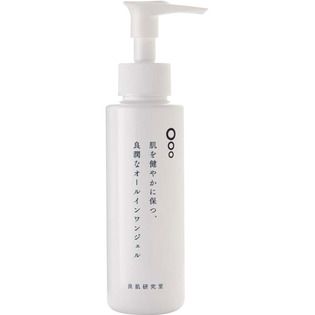

返回列表
产品名称：良肌研究室 オールインワンジェル

ブラシナ 良肌研究室 オールインワンジェル １２０ｍｌ
メーカー ブラシナ
JANコード 4580267148241
商品の特徴
肌を健やかに保つ、良潤なオールインワンジェル
- 成分・分量
- ＜全成分＞
水、グリセリン、トリエチルヘキサノイン、ペンチレングリコール、BG、アスコルビルグルコシド、グリコシルトレハロース、ポリクオタニウム-51、グリチルリチン酸2K、ヒアルロン酸Na、水溶性プロテオグリカン、ヒメフウロエキス、ダイズ種子エキス、プラセンタエキス、α-グルカン、グルコシルセラミド、リンゴ果実培養細胞エキス、キサンタンガム、レシチン、カキタンニン、スクワラン、シクロメチコン、ジメチコン、加水分解水添デンプン、（アクリル酸ヒドロキシエチル／アクリロイルジメチルタウリンNa）コポリマー、ポリソルベート60、（アクリレーツ／アクリル酸アルキル（C10-30））クロスポリマー、水酸化K、クロラミンT、炭酸水素Na、炭酸Na
- 用法及び用量
- -